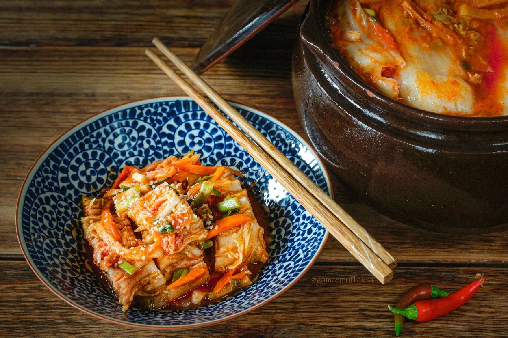
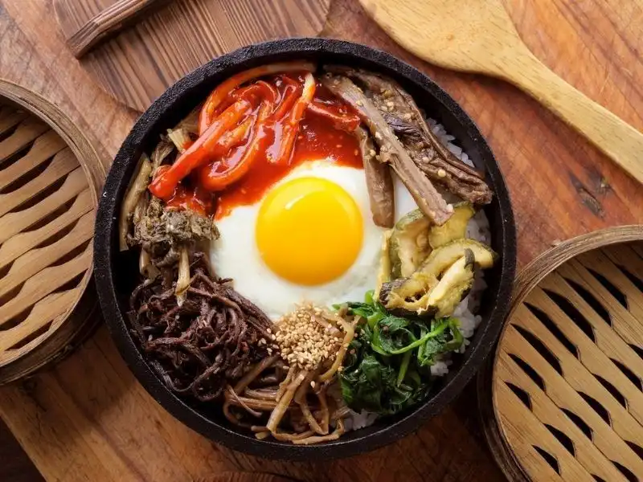

Asia Kitchen's Menu

Kimchi
A traditional side dish made from fermented
napa cabbage and various vegetables. It's spicy and tangy, often served with almost every
Korean meal, enhancing flavors and promoting health with probiotics.
99.99$

Bibimbap
A vibrant rice dish topped with sautéed
vegetables, marinated meat, and a fried egg, all mixed together with gochujang (spicy
sauce). It's a wholesome, balanced meal loved for its colorful presentation.
34.99$
Tteokbokki
Spicy stir-fried rice cakes cooked in a sweet
and spicy sauce, often accompanied by fish cakes and green onions. This popular street food
offers a chewy texture and bold flavor that is highly addictive.
74.99$

Bulgogi
Tender marinated beef that is grilled or
stir-fried, characterized by a sweet and savory flavor from the marinade. Served with rice
or lettuce wraps, it's a favorite for family gatherings and celebrations.
85.99$